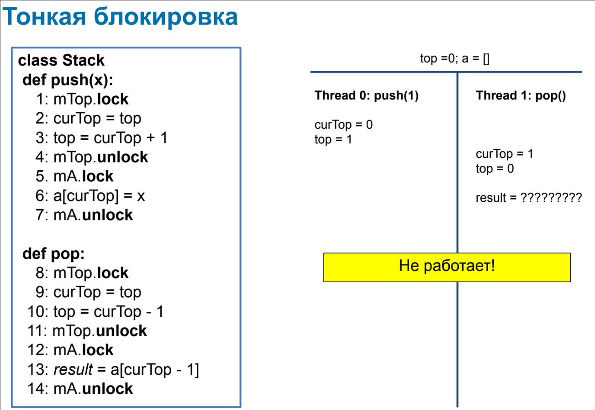

Лекция 2.2. Построение атомарных объектов и блокировки
Декомпозиция исполнения это пятерка \(H, G, \to_G, inv, res\), где
- \(H\) это множество операций, \(\forall e \in H : e \subset G\)
- \(G\) это множество событий
- \(\to_G\) - отношение "произошло до" на \(G\)
- \(inv, res : H \to G\)
- \(\forall e \in H : inv(e) \to_G res(e)\)
- Все точки \(e\) лежат между \(inv\) и \(res\): \(\forall e \in H, g \in e, g \neq inv(e), g \neq res(e): inv(e) \to_G g \to_G res(e)\)
$$\forall e, f \in H : E \to_H f \stackrel{def}{=} res(e) \to_G inv(f)$$
Исполнение \(H, \to_H\) линеаризуемо, если можно найти исполнение \(L(H), \to_{L(H)}\), называемое линеаризацией \(H\), такое что:
- \(L(H) = H\)
- Сохраняется старое отношение \(\to_H\): \(e \to_H f \implies e \to_{L(H)} f\)
- Исполнение последовательно: \((e = f) \lor (e \to_{L(H)} f) \lor (f \to_{L(H)} e)\)
- \(L(H)\) допустимо, т.е. выполняет последовательные спецификации всех объектов
Точки линеаризации это функция \(p : H \to G\) вместе с линеаризацией \((L(P), \to_{L(P)})\), где \(P = p(H)\)
Теорема: Исполнение \(H\) линеаризуемо тогда и только тогда, когда можно выбрать точки линеаризации \(p\) согласовано с линеаризацией, т.е. \(e \to_{L(H)} f \iff p(e) \to_{L(P)} p(f)\)
Есть точки линеаризации \(\implies\) линеаризуемо
Определим \(L(H)\) как \(e \to_{L(H)} f \iff p(e) \to_{L(P)} p(f)\), тогда старое отношение сохраняется, исполнение последовательно (порядок полный) и допустимо. Докажем, что \(\to_{L(H)}\) сохранняет \(\to_H\).

Линеаризуемо \(\implies\) есть точки линеаризации

Это неверно. Однако, можно доопределить точки и тогда искомое очевидно верно. В частности, в модели глобального времени можно найти искомые точки.
Таким образом, для доказательство линеаризуемости достаточно предъявить точки линеаризации, но их может не быть и тогда надо доказывать по-другому (сложно).
Если объект линеаризуем, то можно опустить детали его реализации.
Пусть мы написали в псевдокоде:
def seq:
op1
op2
Тогда \(op1 \to op2\) и \(inv(seq) := inv(op1), res(seq) := res(op2)\) и каждая строчка атомарна, что позволяет нам анализировать через чередование.
Не любой линеаризуемый алгоритм можно реализовать таким образом.
Блокировки
Mutex = mutual excluesion = lock = блокировка. Обладает свойством взаимного исключения, т.е. что выполнение критических секций не может быть параллельным, а следовательно оно будет линеаризуемо. Это требование корректности протокола взаимной блокировки.
Первая попытка
shared boolean want
def lock:
while want:
pass
want = True
def unlock:
want = False
Не работает, т.к. два потока могут увидеть want == false, записать want = true и перейти в критическую секцию.
Вторая попытка
threalocal int id # 0 or 1
shared boolean want[2]
def lock:
want[id] = True
while want[1 - id]:
pass
def unlock:
want[id] = False
Докажем взаимное исключение от противного через чередование, т.к. все строки атомарны.
Пусть два потока зашли одновременно в критическую секцию. Тогда поток id зашел последним в то время, как поток 1 - id уже был в секции. Но в секцию можно зайти только после чтения want[1 - id] == false, это противоречит тому что 1 - id в секции.
Однако, есть проблема - оба потока могут записать want[id] = true и вечно ждать друг друга.
Добавим новое условие: отсутствие взаимной блокировки (deadlock-freedom): если несколько потоков пытаются войти в критическую секцию, то хотя бы один из них должен войти в критическую секцию за конечное время (если критические секции выполняются за конечное время).
Третья попытка
threalocal int id # 0 or 1
shared int victim
def lock:
victim = id
while victim == id:
pass
def unlock:
pass
Доказать взаимное исключение тривиально (как в попытке 2). Докажем deadlock-freedom. Если два потока одновременно крутятся в цикле, то victim == 0 & victim == 1 - противоречие.
Есть другая проблема - если второй поток не хочет зайти в секцию, то victim == 0 всегда и первый поток не зайдёт.
Добавим третье условие: отсутствие голодания (stavation-freedom): если какой-то поток пытается войти в критическую секцию, то он войдёт в критическую секцию за конечное время (если критические секции выполняются за конечное время).
Алгоритм Петерсона
threadlocal int id # 0 or 1
shared boolean want[2]
shared int victim
def lock:
want[id] = true
victim = id
while want[1 - id] and victim == id:
pass
def unlock:
want[id] = false
Гарантирует все наши условия.
Докажем взаимное исключение. Пусть поток id зашел в CS последним, когда 1 - id уже был в CS. Тогда либо want[1 - id] == false или victim != id.
want[1 - id] == false. Это противоречит тому чтоwant[1 - id] == true, т.к.1 - idв CS.victim != id.- Если
1 - idзашел по причинеvictim != 1 - id, то противоречие. - Остается случай
1 - idзашел по причинеwant[id] = false, но тогда он зашел до исполнения первой строки потокомid, но тогда для потокаidвыполненоvictim == id.
- Если
Взаимной блокировки нет в силу victim.
Голодания нет т.к. want[1 - id] == false.
Таким образом, для реализации лока достаточно иметь атомарные регистры чтения/записи.
Алгоритм Петерсона для N потоков
threadlocal int id # 0 to N - 1
shared int level[N]
shared int victim[N]
def lock:
for j in 1 .. N - 1:
level[id] = j
victim[j] = id
while exist k: k != id and level[k] >= j and victim[j] == id:
pass
def unlock:
level[id] = 0
Удовлетворяет тем же требованиям, но алгоритм не очень честный. Невезучий поток может ждать, пока другие потоки \(\mathcal O(N^2)\) раз войдут в критическую секцию. Хотелось бы ждать линейно.
Алгоритм Лампорта (булочника)
threadlocal int id # 0 to N - 1
shared boolean want[N] init false
shared int label[N] init 0
def lock:
want[id] = true
label[id] = max(label) + 1
while exists k: k != id and want[k] and (label[k], k) < (label[id], id):
pass
def unlock:
want[id] = false
Идея: получаем номерок label, который больше всех предыдущих. Но может быть проблема: разные потоки получили один и тот же номер. Поэтому сравниваются не только номерки, но и номера потоков.
Ключевое свойство: если поток P выполнил первые две строки до Q, то он войдёт в секцию раньше. Это более сильное требование, называемое First come, first served:
- Метод
lockсостоит из двух последовательных секций:
def lock:
doorway
waiting
- Секция
doorwayявляетсяwait free(не ждём другие потоки) - Пусть время исполнения
doorwayэто \(DW_i\), а операцийwaitingэто \(WT_i\). - Если \(DW_i \to DW_j\), то \(res(WT_i) \to re(WT_j)\).
Это немножко нечестно - метки должны быть бесконечными. Однако, можно устроить "бесконечные" метки на конечных регистрах.
Обычно говорят, что алгоритм честный, если он FCFS.
Блокировка позволяет избежать гонок.
Test-and-set (compare-and-set) spin lock
def lock:
while !locked.CAS(0, 1):
pass
def unlock:
locked = 0
На практике мы не хотим кушать CPU, пока ждём, поэтому немного spinимся, а потом спим через ОС. На реальном железе не масштабируется и в реальности не используется.
Тонкая блокировка
Мы хотим использовать различные блокировки на разных переменных. Но это опасно - можно получить неверное исполнение. Например:

Есть принцип 2-Phase Locking:
- Берём блокировки на все необходимые объекты
- Выполняем операцию
- Отпускаем все блокировки
Брать и отпускать блокировки можно в любом порядке.
2PL всегда линеаризуемо (точка линеаризации между фазами).
Все следующие операции 2PL:
def proc1:
mutex1.lock
mutex2.lock
obj1.work
obj2.work
mutex2.unlock
mutex1.unlock
def proc2:
mutex1.lock
obj1.work
mutex2.lock
obj2.work
mutex2.unlock
mutex1.unlock
def proc3:
mutex1.lock
mutex2.lock
obj1.work
obj2.work
mutex1.unlock
mutex2.unlock
С помощью блокировок можно сделать любой объект линеаризуемым. Однако есть проблема: может произойти deadlock - если два процесса ждут друг друга (с двумя блокировками). Это решается с помощью выстраивания блокировок в иерархию, где мы захватываем сначала более приоритетные блокировки.